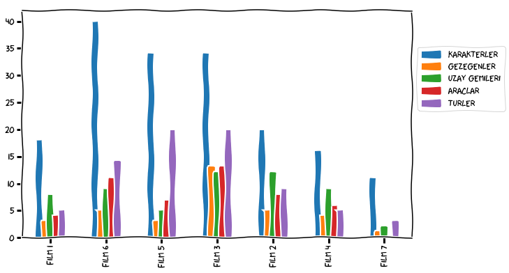
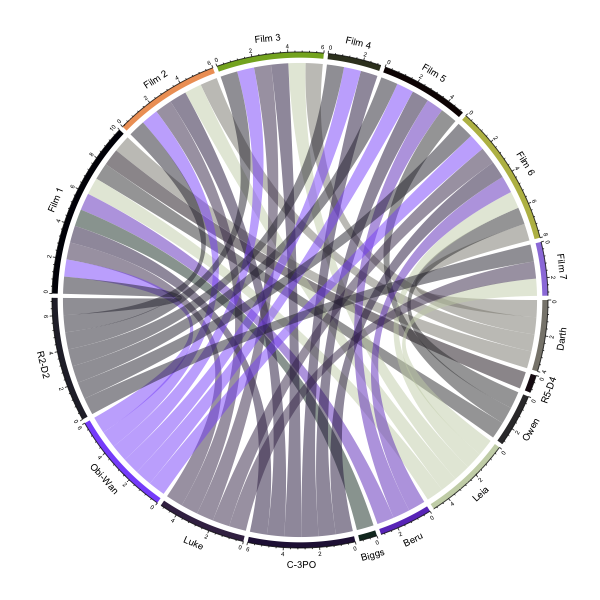

Yağmurlu bir pazar sabahında evdeyim. Aslında okumam gereken birkaç makale var. Gel gör ki canım onlara bakmak istemiyor. Açıkçası Veri Defteri’ne bir yazı hazırlamak çok daha cazip. Hele eğlenceli bir konu bulursam güle-oynaya yazarım diyorum.
İnternette dolaşırken eğlenceli konunun âlâsını buldum. Bir grup arkadaş Yıldız Savaşları filmlerinin verisini internete koymuş. Resmen amme hizmeti. Hatta bir de uygulama ara yüzü (API: application programming interface) hazırlamışlar. Yani internet sorguları ile veriyi çekmek mümkün. Üstelik bu servisi kullanmak için doğrulama (authentication) kaydına da ihtiyaç yok. Gerçekten tam oynamalık bir sayfa olmuş.
Ara yüz için detaylı açıklamayı şu sayfada bulabilirsiniz. Hızlıca özetlemem gerekirse, bu servisten tüm Yıldız Savaşları filmlerinde yer alan karakterlerin, gezegenlerin, türlerin, uzay gemilerinin ve araçların bilgilerine ulaşabiliyorsunuz. Servis veriyi, kullanması oldukça kolay olan JSON formatında veriyor. Bu noktayı biraz açayım. JSON formatında bir veri, iç içe geçmiş süslü parantezlerin yardımıyla bir ağaç yapısında saklanıyor. Örneğin bizim sayfanın künyesini şu yapıda verilen alanlarda tutmak istediğimizi düşünelim:
İsim
Tarih
Konular
Teknik
Uygulama
Sıraladığım bu alan isimlerine anahtar (key) deniyor. JSON formatında veri anahtar:değer ikilileri şeklinde tutuluyor. İç içe geçmiş anahtarların süslü parantezler ile ayrılmasıyla da alt alanlara geçiliyor. Gördüğünüz gibi JSON formatı Python’daki sözlük (dictionary) yapısıyla bire bir örtüşüyor. Sözlükler konusunda Kaan’ın yazısına bir göz atabilirsiniz. JSON formatındaki bir veriyi sözlük değişkenine dönüştürmek içinse farklı paketlerin kendi fonksiyonları mevcut. Bu formatı ve dönüştürme işlemini anlatmak için ufak bir örnek açıklayıcı olur. Örnekteki basit JSON verisini işlerken json paketini kullanacağım.
Dönüştürdükten sonra değişkenin tipi: <class 'dict'>
2017
optimizasyon
Bu önemli ama sıkıcı konuyu geride bıraktıktan sonra Yıldız Savaşları analizine başlayabiliriz. Uygulama ara yüzünden veriyi çekmek için requests paketinin sağladığı get fonksiyonunu kullanacağız.
from requests import getadres ='http://swapi.co/api'# Sözlük formatına çevirmek için .json() fonksiyonunu kullandıkget(adres).json()
Kronolojik sırayı özellikle çıkarmak istedim. Eğer tüm seriyi izlemek isterseniz, bazılarının tavsiye ettiği sıra da bu. Bu arada her filmin açılışındaki kayan yazıyı da kaydetmişler. Harika! Valla şunu yapmasam içimde kalırdı.
from random import randintfrom time import sleep# Rassal olarak bir film seçelimfilm = randint(0,6)# Açılış yazısıprint('\n**** YILDIZ SAVAŞLARI', sonuclar[film]['episode_id'], '****\n')akan_yazi = sonuclar[film]['opening_crawl'].split('\n')for satir in akan_yazi:print(satir) sleep(1) # Bir saniye bekletelim
**** YILDIZ SAVAŞLARI 1 ****
Turmoil has engulfed the
Galactic Republic. The taxation
of trade routes to outlying star
systems is in dispute.
Hoping to resolve the matter
with a blockade of deadly
battleships, the greedy Trade
Federation has stopped all
shipping to the small planet
of Naboo.
While the Congress of the
Republic endlessly debates
this alarming chain of events,
the Supreme Chancellor has
secretly dispatched two Jedi
Knights, the guardians of
peace and justice in the
galaxy, to settle the conflict....
Biraz da istatistik toplayalım. Bakalım hangi filmde ne kadar karakter, gezegen, vb. kullanılmış.
import numpy as np# Veriyi iki boyutlu bir tabloda tutalımfilm_istat = np.zeros((film_sayi,5))# Kullanacağımız bilgilerbilgiler = ['characters', 'planets', 'starships', 'vehicles', 'species']# Tabloyu doldurmafor f inrange(film_sayi):for j, b inenumerate(bilgiler): film_istat[f, j] =len(sonuclar[f][b])
Sayma işlemi tamam. Bir de görselleştirelim.
import pandas as pdimport numpy as npfrom matplotlib import pyplot as plt%matplotlib inlineindeks = ['Film '+str(f) for f in kron_sira]kolonlar = ['Karakterler', 'Gezegenler', 'Uzay Gemileri', 'Araclar', 'Turler']df = pd.DataFrame(film_istat, index=indeks, columns=pd.Index(kolonlar))# XKCD formatı eğlenceli olurplt.xkcd()# Lejantı şeklin dışına alalımdf.plot(kind='bar', figsize=(10,6)).legend(loc='center left', bbox_to_anchor=(1.0, 0.7));

En çok karakter altıncı filmde yer almış. Üçüncü filmde de bir sürü uzay gemisi, tür, araç ve gezegen varmış. Serinin ilkini, yani dördüncü filmi, hatırlarsınız belki. Hani Han Solo uzayda fink atıyor, Luke Skywalker da savaştan savaşa koşuyordu. R2-D2 ve C-3PO isimli iki sevimli robot ile o bölümde tanışmıştık. Tam 40 yıl olmuş!
Karakterlerden bahis açılmışken kim, hangi filmde oynadı bakmak istiyorum. Tüm karakterler çok olur. Neyse ki ara yüz, insanlar (people) adresinden 10 kişiyi veriyor. Arasında tanıdıklar da var. Önce bir karakter-film tablosu oluşturayım. Bu tabloda her satır bir karakter bilgisini içerecek. Eğer o karakter bir filmde oynadı ise o filme karşılık gelen kolondaki değeri bir, aksi halde sıfır yapacağım.
Bu veriyi hazırladıktan sonra dairesel bir şekil çizmek istiyorum. Böyle bir iş içinse R kullanmaya karar verdim. Bunun iki sebebi var: (1) Veri biliminde birden fazla dili karıştırarak çalışmak çok yaygın. (2) Görselleştirme söz konusu olunca R’ın bir adım önde olduğunu düşünüyorum. Madem görsel için R kullanacağım, tabloyu bir metin dosyasına yazayım. Tablodaki değerleri virgülle ayırarak bir metin dosyasına kaydedeceğim. Bu formattaki dosyaların uzantıları .csv oluyor (csv: comma separated values). Bu tür dosyalarla çalışmak için csv paketini kullanabiliriz.
import csv# Karakterler verisini çekelimkarakterler = get(adres+'/people/').json()sonuclar = karakterler['results']karakter_say =len(sonuclar)# Virgüller ile ayırarak 'karakter_film.csv' dosyasına yazalımwithopen('karakter_film.csv', 'w') as dosya: yazici = csv.writer(dosya)for i inrange(karakter_say): satir = ['', 0, 0, 0, 0, 0, 0, 0] isim = sonuclar[i]['name'].split() satir[0] = isim[0] film_say =len(sonuclar[i]['films'])for f inrange(film_say): film_no = sonuclar[i]['films'][f][27:-1] satir[int(film_no)] =1 yazici.writerow(satir)
R ile çizmeden önce dosyanın içeriğine bir göz atalım.
Evet hazırız. Şimdi Jupyter Notebook içinden R betiği (script) çalıştıracağız. Bu betik şekli bir dosyaya yazmalı. Sonra o şekli defterin içinde gösteririz. Kısacası şu üç adımı takip etmemiz yeterli:
İkinci adım R betiğini komut satırından çalıştırma. Çalıştırdıktan sonra betiği silebiliriz.
# Hazırladığımız R dosyasını çalıştıralım!Rscript ys.r# İşimiz bittiği için silebiliriz!rm ys.r
========================================
circlize version 0.4.2
CRAN page: https://cran.r-project.org/package=circlize
Github page: https://github.com/jokergoo/circlize
Documentation: http://jokergoo.github.io/circlize_book/book/
If you use it in published research, please cite:
Gu, Z. circlize implements and enhances circular visualization
in R. Bioinformatics 2014.
========================================
null device
1
Ve son adım: Kaydettiğimiz resmi, defterin içinde gösterme.
from IPython.display import ImageImage("ys.png")

Baksanıza R2-D2 bütün filmlerde oynamış. Belli ki asıl yıldız o. Neyse, yağmurlu bir pazar günü için iyi eğlence oldu. Biraz kurcalasanız kim bilir siz neler yaparsınız? Haydi kolları sıvayın. Güç sizinle olsun!
Bu yazıdaki kodları deneyebileceğiniz deftere GitHub adresimizden erişebilirsiniz.